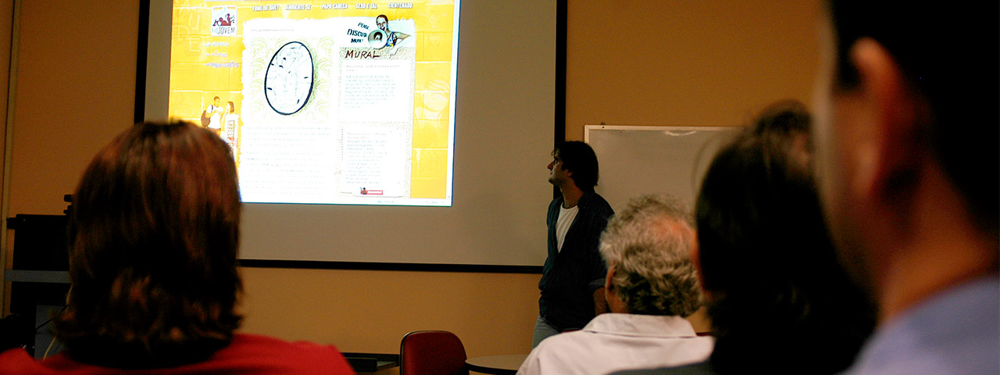
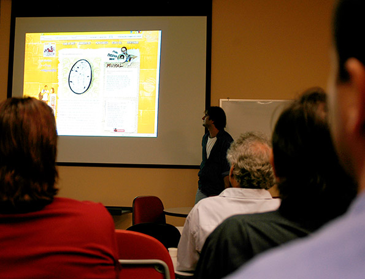

Módulo 3 | Aula 3 A educação em saúde e a educação popular em saúde como estratégias para a assistência à saúde na APS
Tópico 1
Promoção da educação na saúde
O atual perfil demográfico e epidemiológico da população brasileira tem apresentado maior longevidade e queda progressiva nas taxas de mortalidade geral, porém com aumento da prevalência de Doenças Crônicas Não Transmissíveis (DCNT) e presença de doenças infecciosas, endemias e epidemias, mantendo relação direta com determinantes do processo saúde e doença presentes em todas as dimensões da sociedade.
Diante dessa necessidade, são formuladas políticas, programas e serviços de saúde, organizados em rede de complexidade crescente que preconizam a equidade e a integração entre estes níveis, articulando promoção, prevenção, pronto atendimento às doenças e reabilitação, além de promover a intersetorialidade das ações nos territórios e participação da comunidade.
No Brasil, a amplitude do direito à saúde expressa na Constituição Federal de 1988 (BRASIL, 1988) fundamenta os princípios e diretrizes do Sistema Único de Saúde (SUS), em que o referencial da Promoção da Saúde (PS) se constitui como uma direção, balizada por outros conceitos estruturantes das políticas de saúde, formação e qualificação das práticas profissionais. Este referencial influenciou a construção de propostas como a da Vigilância da Saúde (TEIXEIRA, PAIM, VILASBOAS, 1998), Política Nacional de Promoção da Saúde (BRASIL, 2006) e os processos de produção das chamadas políticas saudáveis, articuladas com a Política Nacional de Atenção Básica (BRASIL, 2012) e Política Nacional de Educação Popular em Saúde no SUS (BRASIL, 2013) ganhando concretude na proposta da Estratégia Saúde da Família.
Os princípios e as estratégias acumulados no campo da Promoção de Saúde (BRASIL, 2002) apontam e afirmam a educação em saúde como dispositivo forte e necessário para o movimento dos sujeitos, organizações e instituições em direção à autonomia e protagonismo de ações que produzam modos de viver mais saudáveis.
Neste campo, a Literacia para a Saúde (LS) é intervenção estratégica com objetivos de propiciar meios e instrumentos que ampliem o acesso a informações e conhecimentos que fundamentem o ato de cuidar de si, dos outros e do território.
O conceito inicial de PS, vem historicamente ampliando seu significado, de modo que atualmente pode ser compreendida como:
format_quoteuma agenda integrada e multidisciplinar cujo objetivo primordial é fomentar mudanças em três níveis: assistência à saúde, gestão local de políticas públicas e proteção e desenvolvimento sociais para todos. A estratégia da promoção da saúde é integral na medida em que procura criar e fortalecer elos entre diversos setores e programas, não apenas dentro do chamado “setor de saúde” propriamente dito, mas envolvendo também outras agências de governo, organizações não governamentais e movimentos sociais. Assim, todos os setores da sociedade devem compartilhar a responsabilidade no esforço de proteger e cuidar da vida humana, promovendo saúde e qualidade de vida para todos.
(CARVALHO, 2008, p.4)
A qualidade de vida como significante para a saúde compreende um patamar básico geral no qual se inserem como compromissos éticos: o enfrentamento das iniquidades, a eliminação da pobreza, reconhecimento dos direitos econômicos e sociais da população, justiça social e suporte ambiental.
Diante disso, surge como questão problematizadora fundamental na construção de práticas promotoras de saúde.
Para refletir...
Qual educação em saúde que deve ser implementada com os profissionais e com a comunidade para que a relação entre estes sujeitos produza novos horizontes para a saúde, doença e cuidado?
A educação em saúde à qual somos expostos em nossa formação e que é desenvolvida nas UBS se caracteriza, na maioria das vezes, como bancária, posto que o participante é considerado um depósito vazio a ser preenchido pelo educador, que utiliza como método a transmissão e repetição do que deve ou não ser apreendido.
Mas, poderíamos pensar a educação em saúde como ato inerente ao fazer do profissional, notadamente os que atuam em base territorial e comunitária, como ações educativas em saúde que se constituem como intencionais (práticas sociais e políticas) que buscam a construção de significados para os saberes, as representações e as informações que a população apresenta sobre sua saúde/doença, por meio de atos pedagógicos e comunicativos, são capazes de conscientizar as pessoas de seu lugar no mundo, produzir subjetividades com o sentido de mudança e desencadear a mobilização para a ação, o que se chama de práxis.
Todo ato profissional no âmbito da saúde gera um processo pedagógico, particularmente no trabalho de equipes multiprofissionais que atuam de forma integrada com a população, famílias, grupos e com as instituições. Este fazer pedagógico compreende relações entre sujeitos sociais, portam diferentes saberes e ocorrem em diferentes espaços. São práticas dialógicas, estratégicas, mediadas pela ação instrumental, apresentando-se de maneira formal ou informal, com utilização de metodologias participativas.
E, o que é considerado educação popular? Vejamos a seguir:
Segundo Ayres (2007), qualquer prática humana contempla três dimensões. Clique nas abas abaixo para conhecê-las.
Epistêmica
Relacionada ao conhecimento, ao conhecer, que busca nas causas a explicação para a ação sistematizada que fundamenta o agir.
Técnica
Diz respeito ao uso de tecnologias disponíveis, do saber fazer, da eficiência e da lógica da produção.
Subjetiva
Inerente à práxis, ao cotidiano, preside o encontro entre usuários e profissionais, produzindo interseções entre o que ambos compreendem como boas práticas de saúde.
Em um sentido mais pragmático, é importante definir qual a perspectiva que as ações educativas serão pensadas, discutidas, planejadas, realizadas e avaliadas. Deve-se considerar que nos níveis individual e coletivo tais ações expressam um saber fazer técnico, epistêmico, hábil e consciente; apresentam materialidade territorial; ocupam um lugar, espaço-território no qual as ações são realizadas em ato; e uma perspectiva relacional com o outro (indivíduo e comunidade), com o qual construímos os significados da prática.
No âmbito da APS, as UBS representam o ponto de articulação e interação entre pessoas, grupos, comunidade e serviços ofertados pelos profissionais, entendendo que este encontro se mostra como um momento em que distintos desejos, vontades e visões de mundo se colocam frente a frente, deixando evidentes as diferenças existentes.
Mas, para que o encontro se torne produtivo, é necessário romper com a dicotomia em que, de um lado, encontram-se pessoas, grupos e comunidade que comparecem aos serviços apresentando problemas complexos e não estruturados, repletos de incertezas sobre como enfrentá-los, gerando angústias, sensação de dependência, submissão, impotência, tristeza e desespero; e do outro lado, se colocam os serviços orientados pela racionalidade institucional, que algumas vezes não reconhece a urgente necessidade em busca de soluções para os problemas de saúde e doença.
Neste cenário, o principal desafio é afirmar as UBS como espaço de possibilidades e integralidade de saberes para o desenvolvimento de ações educativas, por meio da escuta sensível às necessidades individuais e coletivas, do incentivo à participação dos envolvidos, produzindo visibilidades e reflexões e fundamentando a enunciação de ações e sujeitos de práticas compartilhadas.
Um outro desafio encontra-se nas ações educativas que acontecem nos espaços comunitários externos ao ambiente das UBS; institucionais, como escolas, entidades públicas locais, igrejas; e organizações como associações de moradores, conselhos de saúde, grupos de pais e mães e outras que atuam no território.
Para superar os desafios, um passo inicial é a incorporação da concepção de que comunidade não é algo homogêneo e horizontalizado às nossas ações, como prescrevia o ideário da proposta de saúde comunitária dos anos 70 do século passado. Nos territórios de APS existem diversas comunidades que apresentam dinâmicas de organização e mobilização específicas, interagindo no enfrentamento do cotidiano. Este espaço território representa para cada profissional da equipe de saúde o lugar em que acontece a expressão prática do que se aprende na formação, experimentamos a veracidade do saber teórico e vivenciamos possibilidades de construção compartilhada de desejos, saberes e fazeres.
A amplitude conceitual e metodológica da APS tem orientado inúmeras intervenções e experiências em promoção e educação em saúde em todo o mundo. No Brasil, o processo de institucionalização por meio de políticas, programas e projetos possibilita seu desenvolvimento nos estados e municípios, desde a perspectiva organizacional na gestão do SUS ao suporte material.
Entretanto, estas experiências têm sido desenvolvidas sob uma perspectiva difusa, que dependem mais da iniciativa do profissional, muitas vezes sem objetivos, metas e recursos definidos. Assim, as ações educativas se diluem no universo das práticas assistenciais, muitas vezes não sendo consideradas institucionalmente nos planos e relatórios de gestão, ou descritas de forma descontínua, com pouca sustentabilidade, não sendo sistematizadas e avaliadas. Isto reforça a necessidade de decidir, planejar e organizar no território da UBS a educação em saúde a ser desenvolvida, com a equipe profissional, grupos e comunidades, reconhecida como responsabilidade institucional, inerente ao processo de trabalho na APS e comprometida com as condições de vida e saúde da população.
E, para planejar ações educativas em saúde, sugere-se, a seguir, quatro premissas. Clique nos títulos para saber mais sobre elas.
O encontro entre profissionais de saúde e usuários que demandam cuidados no enfrentamento de situações complexas põe em cena culturas e conhecimentos distintos, resultando em distanciamentos entre o modo como o profissional entende, explica e prescreve a situação e os significados que os sujeitos demandantes atribuem à vivência da situação no cotidiano.
É importante assinalar que mesmo sem uma definição precisa, situações complexas se caracterizam pela associação entre os processos de adoecimento e sofrimento e a presença de diferenciados níveis de vulnerabilidade social. Um exemplo disso é a conjunção de ser idoso, diabético, aposentado com o salário mínimo, vivendo sozinho e dependente dos serviços públicos para o atendimento em saúde. Como garantir que pessoas e coletivos sociais consigam produzir e promover saúde sob tais condições?
A identificação dos determinantes destas situações são arranjos de pensamento que justificam para as pessoas seu estado de saúde, orientam suas atitudes e justificam suas ações. Na relação dos serviços de saúde com os profissionais também circulam culturas diferentes, como a que rege a conduta profissional, as crenças e concepções dos usuários e que orienta os significados de saúde, doença, sofrimento, serviços de saúde e a cultura organizacional presente nos serviços públicos.
Guattari e Rolnik (1986) recuperam os vários sentidos que o termo cultura foi adquirindo ao longo da história e agrupam em três núcleos de significação: cultura valor, que é o julgamento e a separação que fazemos entre os que têm ou não cultura; cultura mercadoria, que determina a produção e o consumo de quase todos os objetos e comportamentos que nos cercam; e cultura como alma coletiva que diz respeito à identidade social e é engendrada nos territórios físicos e existenciais.
A polissemia do termo cultura, particularmente quando nos referimos a culturas (no plural), introduz uma concepção a partir da subjetividade existente nas relações entre as pessoas que permeiam as organizações e as instituições, mas que a elas se sobrepõem e as ultrapassam para se realizarem no encontro com o outro no cotidiano da vida (PEDROSA, 2007) que denominaremos de cultura institucional e organizacional presentes em uma UBS.
Compreender as estratégias de sobrevivência e dialogar com as justificativas para os comportamentos e atitudes dos usuários das Redes de Atenção à Saúde, que apresentam doenças crônicas como: cardiopatia, hipertensão, doença renal crônica, transtorno de saúde mental, câncer e diabetes, é fundamental para o processo de cuidado.
Com este objetivo, é possível utilizar como ferramenta de trabalho a construção compartilhada da categoria “modos de viver”. Tal ferramenta consiste na sistematização da escuta por parte dos profissionais de como os usuários analisam, explicam, justificam a existência da doença para si, sua família e grupos. A sistematização desses saberes surge como dispositivo estratégico que aproxima a racionalidade técnico-científica da racionalidade determinada pelo cotidiano, no qual aparece a situação que carece de enfrentamento, possibilitando novas compreensões e atitudes.
Tal ferramenta tem como base a categoria “modos de andar a vida”, fundamental na obra de Canguilhem (1978) - O Normal e o Patológico. Nesse sentido, sua originalidade encontra-se na perspectiva de orientar o diálogo entre os envolvidos na relação do cuidado promovendo a compreensão mútua, possibilitando a construção de novos horizontes de normatividade em que o cotidiano passa a ser orientado pela inclusão da situação vivenciada.
Para tanto, além da vontade do profissional e da permissão a si próprio de colocar-se na condição de escutar o outro, devem existir condições externas e ambientação para que o outro se sinta à vontade e autorize a si mesmo a falar sobre sua vivência. Tais competências exigem certas habilidades do profissional que necessitam ser incorporadas ao processo de trabalho em saúde, que por sua vez é bastante complexo e aprisionado ao produtivismo e ao procedimentalismo que permeiam a cultura das profissões e serviços de saúde.
Consideramos a escuta como tecnologia leve (MERHY, 2002) e o diálogo preconizado por Freire (2003), como referências básicas para a construção da categoria em foco, pois preconiza a existência de saberes distintos, diferentes em seus princípios de validade. Sob uma perspectiva encontra-se o saber técnico e científico, organizado, normatizado, reproduzido e validado nas instituições que formam os profissionais de saúde e fomentam o exercício do pensamento (SANTOS, 2010); em outra, encontra-se um saber legitimado no cotidiano – saber de experiência feito.
Nesse cenário e momento ocorre um contato intercultural, ou seja, um encontro entre pessoas com culturas distintas. Segundo Dantas (2012), qualquer concepção de saúde é culturalmente engendrada pois não só temos diferentes visões de mundo que retratam formas distintas de compreensão do que é saúde como, a partir destas, cada cultura tem formas distintas de alcançá-la e realizar sua promoção, assim como buscar a cura quando do que se considera adoecimento (p. 115).
Segundo Dantas (2012), competência intercultural dos profissionais se caracteriza por autoconhecimento ético ao considerar condutas adequadas e inadequadas; consciência das características gerais de sua prática profissional, dos efeitos de sua intervenção e sua relação com a cultura e classe social; habilidade de compartilhar da visão de mundo do outro; compreensão das forças sociopolíticas que afetam os usuários como pobreza, racismo, discriminação, exclusão e opressão; conhecimento de teorias ecléticas (mestiças, híbridas), habilidades técnicas e capacidade de escolher qual intervenção é a mais apropriada para aquele com quem fala.
Com base nessas competências, a construção compartilhada da categoria “modos de viver” mostra-se como dispositivo estratégico para a realização das ações educativas na relação usuários/profissionais de saúde envolvidos no cuidado para o enfrentamento de situações complexas definidas pela presença de doenças crônicas.
Diante disso as equipes de saúde da APS devem se mobilizar para preparar as condições operacionais e pedagógicas necessárias para a materialização das ações educativas.
O construto fundamental das ações educativas é a comunicação que se estabelece entre os participantes fazendo com que o diálogo seja produtivo, participativo, faça sentido para a vida das pessoas, fortaleça a vontade de agir e a horizontalidade entre os sujeitos.
No âmbito da UBS, tais ações devem ser referenciadas e articuladas com as proposições advindas das conferências de saúde, contempladas nos planos municipais e expressas na programação das atividades. Assim, deve-se:
- Definir no plano de trabalho e na programação da UBS agenda com carga horária protegida, cronograma, responsáveis, espaço físico e material básico de apoio.
- No território, promover a interação entre os participantes, constituir rodas de conversa; fortalecer os vínculos afetivos entre equipe e população; qualificar e aprimorar a escuta; utilizar técnicas pedagógicas participativas, criativas e alegres.
- Com as pessoas, reconstruir e qualificar as informações circulantes que compõem o universo informacional (os saberes, as representações, as notícias), partindo do que sabem e sentem sobre o problema e produzir com os envolvidos informações comunicantes, qualificadas, capazes de gerar elementos para a produção de novos sentidos que atinjam os espaços individuais e coletivos, públicos e privados.
- Como resultado, as mensagens produzidas devem fazer sentido para as pessoas, que se reconhecem nos sinais (linguagem) fazendo com que descubram a si mesmos como parte da realidade, com potencialidade de se movimentarem em outra direção.
São movimentos desencadeados por cada profissional e pela equipe que definem a ação educativa como prática pedagógica:
- Fortalecer em si e nos outros a vontade de fazer e saber mais para compreender a realidade vivenciada, por meio do cultivo à curiosidade crítica e da reflexão sobre as dúvidas que surgem no processo. Trabalhar a compreensão e aceitação diante das adversidades.
- Considerar que autonomia é um processo de decisão e humanização construído historicamente, a partir dos movimentos que vamos fazendo ao longo de nossa existência, presentes no cotidiano. A autonomia se constrói na experiência de decidir. Imprimir às ações educativas o sentido da emancipação que decorre da intencionalidade declarada e assumida por todos os comprometidos com a transformação das determinações das condições e situações de vida. No tocante às DCNT e tomando como critério a governabilidade e o âmbito de resolução dos problemas apresentados, é possível identificar determinantes que se situam em três níveis: proximais, que se encontram próximos da ação cotidiana do indivíduo no intento de sua modificação; mediais, que se situam nas relações com a comunidade, cuja ação modificadora pode ser localizada e depende dos movimentos dos coletivos e organizações sociais; e distais, determinantes cuja transformação exige ações mais radicais nas estruturas da sociedade. Com este exercício, definimos coletivamente quais ações poderiam ser realizadas nos vários níveis e definimos, entre os determinantes consensuados, quais os que poderiam servir de marcadores para acompanhar e avaliar as intervenções.
- Construir diálogos em roda, um processo de ensino e aprendizagem sem hierarquia entre posições, possibilitar a presença viva dos saberes, que circulam no território, gerando confiança e disposição para pensar e criar, mesmo o que ainda não foi experienciado. O diálogo representa olhar o mundo e nossa existência em sociedade como processo, algo em construção, como realidade inacabada em contínua transformação. Dizer o mundo segundo nosso modo de ver.
- Cultivar a sensibilidade e afetividade (gostar de estar com e respeitar o outro na convivência com a diversidade) em relação de dignidade coletiva, de construção de utópicas esperanças em que a vida é referência para se viver com justiça.
O processo de territorialização das UBS inicia com o diagnóstico situacional, que inclui aspectos epidemiológicos, organizacionais, sociais e demográficos. A estes aspectos são acrescentadas informações sobre a dinâmica local obtidas por visitas domiciliares, observação participante e análise de documentos, junto às organizações existentes na comunidade, lideranças formais e informais, famílias, espaços institucionais e comunitários, dinâmica do controle social em saúde e os itinerários que a população faz para resolver seus problemas.
Estas atividades de reconhecimento e interação no território são realizadas, registradas, discutidas e analisadas com a equipe técnica e administrativa da UBS que define as prioridades do ponto de vista epidemiológico e de cuidado na saúde. E para que as ações propostas e desenvolvidas obtenham maior aceitação junto à população, recomenda-se que as equipes atuem de forma integrada à comunidade, considerando suas particularidades sociais e culturais e promovendo ações que favoreçam a equidade.